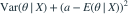

已知给定θ时Xi条件独立同分布为Bernoulli(θ)，样本和为T，损失为平方损失，但没有给定先验。以下哪项正确？
- A必为
- B可知最优形式是后验均值，但一般不能唯一确定为T和n的某个具体公式
- C必为

- D必为
我已思考，展开答案与解析
正确答案：B
- 平方损失下的条件风险可写为

。 - 最优a是后验均值；后验由先验和似然共同确定。
- 若先验取Beta(α,β)，答案为 ，不同先验给出不同值。
易错提醒均匀先验不能在题目未给时自动补成唯一答案。
考后回忆 · 条件重建 · 回忆6的条件完整性辨析
依据考试回忆重建；数字、选项和必要条件为补充设定，非原题。